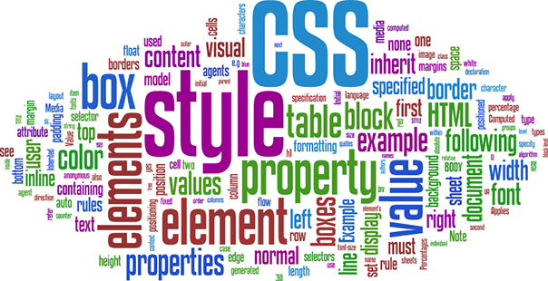

Inne

właściwość overflow - ukrywanie wartości: hidden - ukrycie niemieszczącej się zawartości elementu scroll - dodanie suwaków do elementu auto - dodanie suwaków do elementu, gdy pojawi się niemieszcząca się zawartość visible - niemieszcząca się zawartość elementu pozostanie widoczna właściwość opacity - przezroczystość wartości: od 0-1 gdzie przy 0 element jest niewidoczny właściwość cursor - opcje kursora all-scroll,grab,pointer,wait, wiele innych opcji wyglądu kursora właściwość transition-duration - płynne przejście transition-duration:7s; selektor atrybutu - selektor ktory odwołuje sie do wskazanego atrybutu input[name="nazwa"]